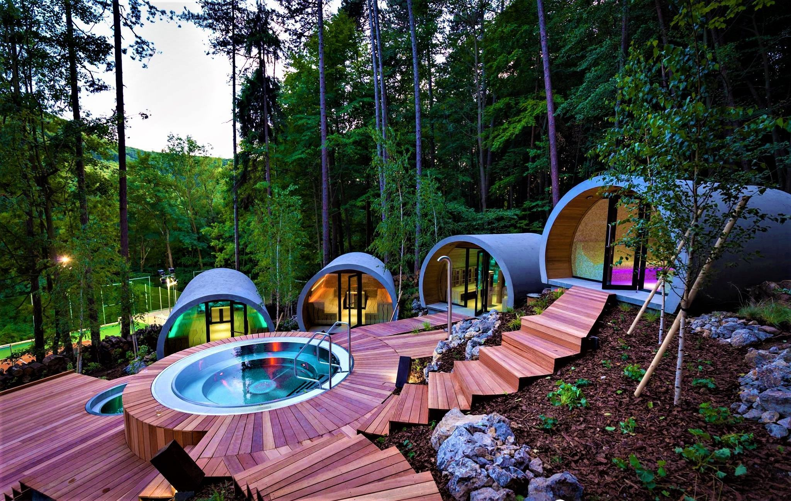
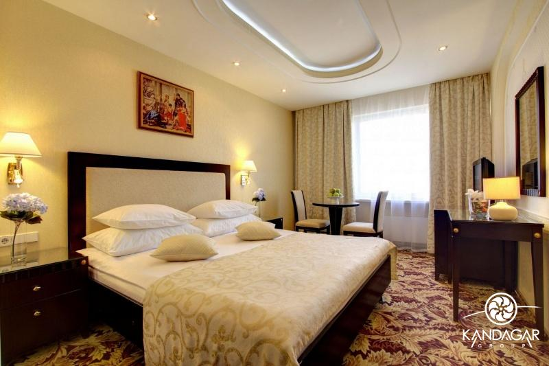
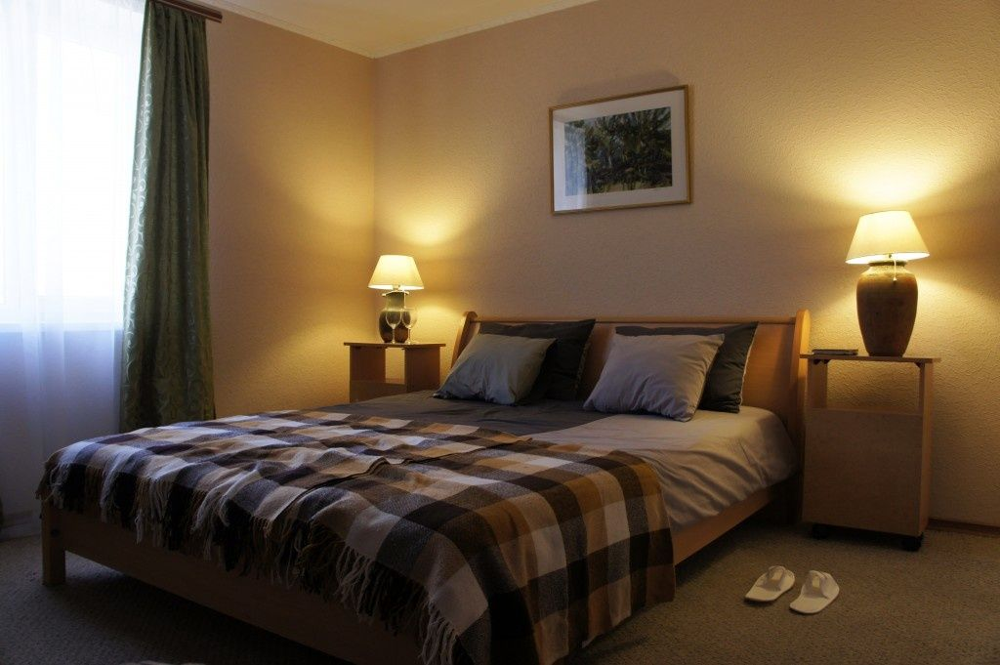

|

Глэмпинг
Домик на воде, построенный из экологических материалов, совмещает в себе комфорт гостиничного номера и отдых на лоне природы. В домике есть двуспальная кровать, а место для третьего человека или ребенка есть на антресоле, под крышей, так же домики оснащены вентиляторами на теплое время и обогревателями на холодное время. Размещение сезонное с мая по ноябрь. Будни: 7500р. / сутки Выходные: 8500р. / сутки |

Стандарт
Такое размещение подойдет для двух взрослых. Этот номер представляет собой комнату площадью 18.5 кв.м. со своим санузлом. Комната оснащена всем необходимым для комфортного времяпрепровождения. В теплое время года номер будет раздовать свой прохладной, а в зимний период будет встречать своим теплом. В номере есть балкон, откуда открывается вид на лес. Будни: 4900р. / сутки Выходные: 5500р. / сутки |

Семейный
Номер представляет собой двухкомнатные апартаменты общей площадью 26 кв. м., со своим санузлом. Номер оснащен всем необходимым для комфортного времяпрепровождения. В теплое время года номер будет раздовать свой прохладной, а в зимний период будет встречать своим теплом. В номере есть балкон, откуда открывается вид на лес или внутренний двор гостиничного комплекса. Будни: 7600р. / сутки Выходные: 8600р. / сутки |